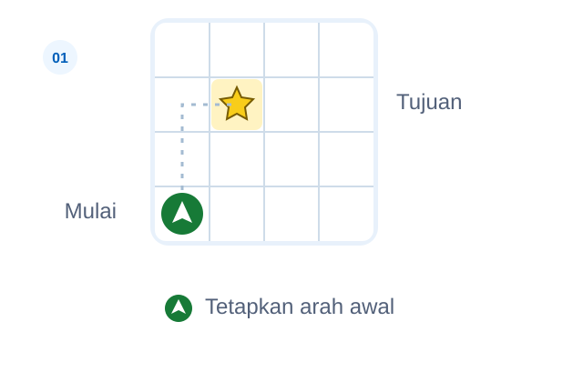
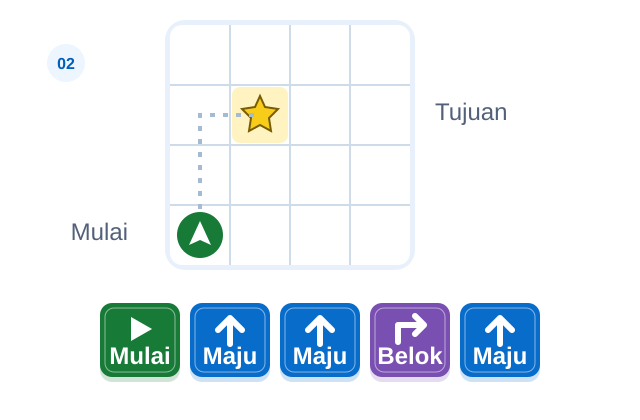
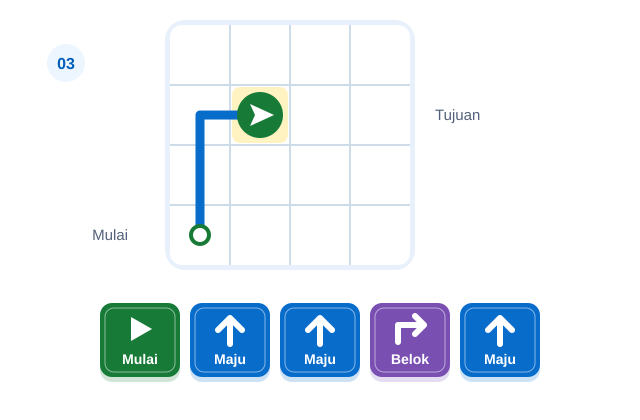
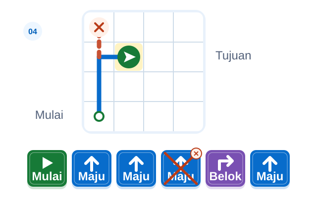

Antar ke tujuan
Letakkan tujuan pada papan. Ajak anak menyusun rute pendek untuk mencapainya.
CODING · MAIN, SUSUN, TEMUKAN
Susun keping instruksi, jalankan langkahnya, lalu temukan jalan menuju tujuan. Kenalkan dasar coding melalui permainan yang bisa disentuh dan dimainkan bersama.
KENALI PRODUKNYA
Keping kecil untuk mengenalkan
cara berpikir langkah demi langkah.
Anak menyusun instruksi menggunakan keping fisik. Setelah itu, anak atau guru menggerakkan penanda pada papan permainan, mengikuti perintah satu per satu.
Penanda digerakkan secara manual oleh anak atau guru.
Awali urutan.
Bergerak satu petak.
Ubah arah hadap.
Kenali pola berulang.
CARA BERMAIN
Mulai dengan rute pendek.
Ikuti empat langkah ini bersama anak.

Siapkan papan, penanda, dan tujuan. Ajak anak melihat posisi awal serta arah hadap penanda.

Sambungkan keping: mulai, maju, maju, belok kanan, lalu maju. Baca urutannya bersama.

Gerakkan penanda satu instruksi setiap kali. Saat belok, ubah arah hadapnya di petak yang sama.

Belum sampai tujuan? Cari langkah yang perlu diubah, susun ulang kepingnya, lalu coba sekali lagi.
Papan dan penanda pada gambar digunakan untuk menjelaskan aktivitas. Kelengkapan paket mengikuti pilihan set yang dikonfirmasi saat pemesanan.
UNTUK SEKOLAH & KEGIATAN BERSAMA
Guru dapat menyesuaikan jumlah keping dan panjang rute dengan kesiapan anak.
Letakkan tujuan pada papan. Ajak anak menyusun rute pendek untuk mencapainya.
Satu anak menyusun instruksi, temannya menjalankan. Lalu bertukar peran.
Guru menyiapkan urutan untuk diperiksa. Anak mencoba, berdiskusi, dan memperbaikinya.
Untuk pengenalan di PAUD, mulai dengan sedikit keping dan pendampingan guru. Kesesuaian usia serta ukuran komponen dikonfirmasi sebelum memilih set.
RENCANAKAN KEGIATANMU
Ceritakan kebutuhanmu untuk menanyakan pilihan set, kelengkapan, dan harga Code Tiles.
Tanya Paket untuk SekolahIsi formulir untuk membuat ringkasan yang bisa disalin dan dibagikan kepada tim TIGO LAB.